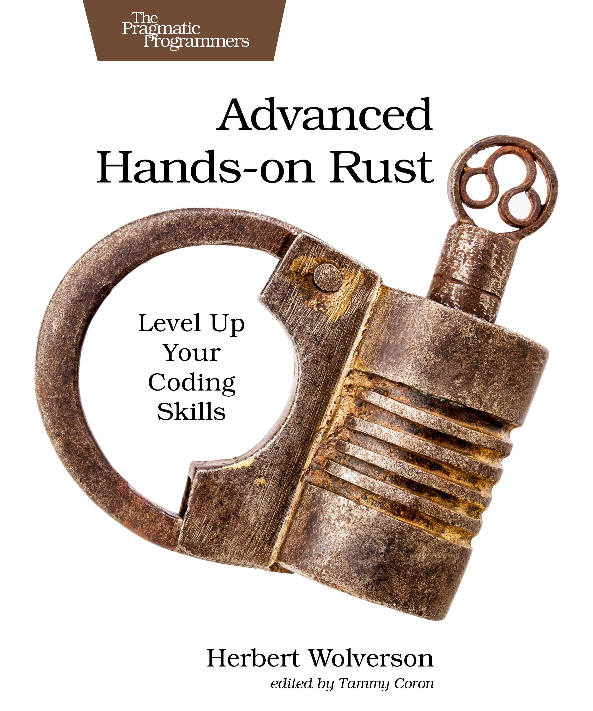

Advanced Hands-on Rust

What do you see as the biggest mindset shift developers need to make when coming to Rust from C++, Java, or C#?
In Java and C# you run MyThing o = new MyThing() and an instance of MyThing appears on the heap. It'll be deleted when the garbage collector notices that it is no longer reachable.
Both let you make the destruction explicit:
try (MyThing thing = new MyThing()) {
// Do my thing
} catch (ThingException ex) {
// Handle the errors
} // Thing is destroyed
using (MyThing thing = new MyThing()) {
} // Thing is destroyed
This pattern is called RAII - Resource Acquisition is Initialization. You can tell that C++ invented the name, because it's a vital concept - and not very descriptive!
In C, C++ and Rust you have a stack and a heap. The stack is fast, small and local - the heap is where you put big things!
In C++ (and C#!) you can define a destructor. Let's use this to illustrate stack cleanup; your C++ object is automatically cleaned up the moment it goes out of scope (absolutely deterministic):
#include <iostream>
struct MyClass {
MyClass() {}
~MyClass() {
std::cout << "Being Destroyed\n";
}
};
int main() {
auto c = MyClass();
return 0;
}
This will always print:
Being destroyed
Rust looks suspiciously similar - you'd almost think that Rust was designed by C++ users looking to fix the common issues!
struct MyClass {} impl Drop for MyClass { fn drop(&mut self) { println!("Being Destroyed"); } } fn main() { let c = MyClass{}; }
This also prints:
Being destroyed
Pointers and the Heap
C, C++ and Rust don't automatically put anything on the heap for you --- they even work on platforms that don't have one.
No Runtime!
Rust compiles down to the same machine code as C and C++ - there is no need to have a runtime.
So you don't have to ship a JVM/.NET Runtime.
Unlike C++, Rust statically compiles its Rust-crate libraries - so the entire Rust standard library is included in your binary by default. You can opt out of that (with no_std), but generally Rust ships with everything it needs to run. It will still usually rely on platform libraries such as libc/glibc, unless you are targeting a platform such as MUSL (that is entirely statically linked).
Stack vs Heap
This mostly affects coming from Java/C#.
Java and C# let you view memory as this big, amorphous blob. The runtime does garbage collection, and cleans up after you. It's hard to make memory errors (but sometimes possible), because the runtime will try and keep objects alive until nothing refers to them.
Both languages (outside of FFI/unsafe) typically view memory as one big heap. In Java and C# you run MyThing o = new MyThing() and an instance of MyThing appears on the heap. It'll be deleted when the garbage collector notices that it is no longer reachable.
Both let you make the destruction explicit:
try (MyThing thing = new MyThing()) {
// Do my thing
} catch (ThingException ex) {
// Handle the errors
} // Thing is destroyed
using (MyThing thing = new MyThing()) {
} // Thing is destroyed
In C, C++, and Rust most things are on the stack unless you say otherwise. The stack is tiny (8 Mb by default on Linux) - but you can write simple programs without ever touching memory management:
struct MyThing{};
int main() {
MyThing c = MyThing{};
return 0;
} // Thing is guaranteed to be destroyed *right now*
struct MyThing{} fn main() { let c = MyThing{}; } // Thing is guaranteed to be destroyed *right now*
So from a C++ point-of-view, you have:
Boxin Rust (which is basically C++'sunique_ptr).Rcin Rust (which is basically C++'sshared_ptrin single-threaded mode)Arcin Rust (which is basically C++'sshared_ptrin multi-threaded mode)
The Heap
In C, you learn to love malloc and free for putting things on the heap:
struct MyThing{};
int main() {
MyThing * c = malloc(sizeof(MyThing));
free(c); // Thing won't be removed from the heap if you forget!
return 0;
}
In Older C++, you have new and delete:
struct MyThing{};
int main() {
auto c = new MyThing{};
delete c; // Thing won't be removed from the heap if you forget!
return 0;
}
In Modern C++, you can use a smart pointer:
#include <memory>
struct MyThing {};
int main() {
auto c = std::make_unique<MyThing>();
} // c will self-delete when it goes out of scope
You can use alloc() (and even malloc() if you want to) with unsafe Rust, but most of the time you'll use the built-in smart pointers:
struct MyThing {}; fn main() { let c = Box::new(MyThing{}); }
Oopsies
Rust takes a lot of care to avoid common pitfalls.
This will compile and run in C++:
#include <iostream>
struct MyThing{
int i;
};
int main() {
auto c = new MyThing();
c->i = 3;
delete c;
std::cout << c->i << "\n";
return 0;
}
This might print 3. It usually will. It might also unleash nasal demons - the C++ standard says so!
Equivalent Rust won't compile:
struct MyThing { i: i32 } fn main() { let c = Box::new(MyThing { i: 32 }); drop(c); println!("{}", c.i); }
This will compile and run in C++:
#include <vector>
#include <iostream>
int main() {
std::vector<int> numbers = {1, 2, 3, 4};
for (int i=0; i<6; i++) {
std::cout << numbers[i] << "\n";
}
return 0;
}
In the playground, I got "1, 2, 3, 4, 0, 6897". It's anybody's guess what you'll get. It might be state secrets!
In Rust:
fn main() { let numbers = vec![1, 2, 3, 4]; for i in 0..6 { println!("{}", numbers[i]); } }
Instead of revealing state secrets, Rust "panics" (crashes) - just like the managed languages:
thread 'main' (14) panicked at src/main.rs:4:31:
index out of bounds: the len is 4 but the index is 4
note: run with `RUST_BACKTRACE=1` environment variable to display a backtrace
That's a good thing. You don't want to read into invalid memory and see what's there!
Let's Get Racy
Rust makes data races not compile.
For example:
#include <thread>
#include <vector>
#include <atomic>
#include <iostream>
int main() {
int counter = 0;
std::vector<std::thread> handles;
for (int i=0; i<3; i++) {
handles.push_back(
std::thread([&counter]() {
for (int i=0; i<100000; i++) {
counter++;
}
})
);
}
for (int i=0; i<handles.size(); i++) {
handles[i].join();
}
std::cout << "Counter: " << counter << "\n";
return 0;
}
This gives you a different answer every time - there's a race condition with multiple threads updating counter all at once.
Rust won't even let you compile this:
fn main() { let mut counter = 0; let mut handles = Vec::new(); for _ in 0..3 { handles.push(std::thread::spawn(|| { for _ in 0..100_000 { counter += 1; } })) } for handle in handles { handle.join(); } }
It will fail to compile. The actual compilation error is comically large:
Compiling playground v0.0.1 (/playground)
error[E0373]: closure may outlive the current function, but it borrows `counter`, which is owned by the current function
--> src/main.rs:5:41
|
5 | handles.push(std::thread::spawn(|| {
| ^^ may outlive borrowed value `counter`
6 | for _ in 0..100_000 {
7 | counter += 1;
| ------- `counter` is borrowed here
|
note: function requires argument type to outlive `'static`
--> src/main.rs:5:22
|
5 | handles.push(std::thread::spawn(|| {
| ______________________^
6 | | for _ in 0..100_000 {
7 | | counter += 1;
8 | | }
9 | | }))
| |__________^
help: to force the closure to take ownership of `counter` (and any other referenced variables), use the `move` keyword
|
5 | handles.push(std::thread::spawn(move || {
| ++++
error[E0499]: cannot borrow `counter` as mutable more than once at a time
--> src/main.rs:5:41
|
5 | handles.push(std::thread::spawn(|| {
| - ^^ `counter` was mutably borrowed here in the previous iteration of the loop
| ______________________|
| |
6 | | for _ in 0..100_000 {
7 | | counter += 1;
| | ------- borrows occur due to use of `counter` in closure
8 | | }
9 | | }))
| |__________- argument requires that `counter` is borrowed for `'static`
|
note: requirement that the value outlives `'static` introduced here
--> /playground/.rustup/toolchains/stable-x86_64-unknown-linux-gnu/lib/rustlib/src/rust/library/std/src/thread/mod.rs:728:15
|
728 | F: Send + 'static,
| ^^^^^^^
Some errors have detailed explanations: E0373, E0499.
For more information about an error, try `rustc --explain E0373`.
error: could not compile `playground` (bin "playground") due to 2 previous errors
Rust really doesn't want you to make this mistake! (You can solve this particular problem with an AtomicUsize, or use a proper Mutex)
Performance
When compared with Java and C#: your Rust program will use a lot less memory. It will often run faster, but the JVM in particular is amazing at Just In Time optimization and sometimes beats C in runtime performance!
When compared with C and C++: your binaries will be bigger (they are statically linked by default), runtime performance for both speed and memory usage will be about the same.
Is Rust’s steep learning curve still a problem in 2025, or has the ecosystem matured enough to ease newcomers in?
Pre-1.0, Rust looked terrifying:
fn main() { // Owned box (heap allocation), the '~' symbol has been removed in modern Rust let mut x: ~int = ~10; // 'mut' was also a property of the field/binding // Reference counted pointer, '@' has also been removed for ownership semantics let y: @int = @20; // A pure function declaration (pure was a keyword) pure fn add(a: int, b: int) -> int { ret a + b; // 'ret' was used instead of 'return' } log(fmt!("%d + %d = %d", *x, *y, add(*x, *y))); // Lifetimes were indicated with a '\' instead of '\'' // e.g., fn get_str(s: \&str) -> \&str { s } }
And we talked about memory a lot. So you might fear running into code like this:
#![allow(unused)] fn main() { fn allocate_memory_with_rust() { use std::alloc::{alloc, dealloc, Layout}; unsafe { // Allocate memory with Rust. It's safer to force alignment. let layout = Layout::new::<u16>(); let ptr = alloc(layout); // Set the allocated variable - dereference the pointer and set to 42 *ptr = 42; assert_eq!(42, *ptr); // Free the memory - this is not automatic dealloc(ptr, layout); } } }
Here's the good news: unless you're writing really deep library code (which you won't be, if you just started!) - Rust looks more like this:
use axum::{routing::get, Router}; #[tokio::main] async fn main() { let listener = tokio::net::TcpListener::bind("127.0.0.1:3001").await.unwrap(); let app = Router::new() .route("/", get(say_hello)); axum::serve(listener, app).await.unwrap(); } async fn say_hello() -> &'static str { "Hello, World!" }
That's a complete, working webserver. It looks a lot like Express and other webservers. Rust scales with you. It's really easy to get started making something useful.
Will Rust gain widespread adoption in 2026?
YES!
(Is that short enough?)
Linux just ended the Rust experiment: by making it no longer an experiment. Rust is in Linux, forever.
I'm training more and more companies from different fields who want:
- Safety
- Deterministic Performance
- C-Like Performance without the Headache
I've been seeing companies in defense, aerospace, automotive, and finance all adopting Rust.
What’s ownership and borrowing? Why do we need these things in Rust? What’s the best way to really “get” them?
If you've been writing C and C++, you already know about the concepts on some level.
Ownership is "who owns this object, and who is responsible for destroying it". In C & C++, you have to understand this or terrible things happen. Rust makes the concept explicit.
So in C++, you create a unique_ptr<MyThing> - and when it falls out of scope, it's destroyed. Rust is exactly the same.
C++ has the scary std::move (it's actually a cast!) for conceptually moving ownership of a variable - it now belongs to the recipient. Rust is move by default - you can't accidentally use the thing you just moved. But the principle is the same: someone owns the thing.
It's like a car. If I give you the keys and the title, it's now yours (you can of course give it back).
On the other hand, in C++ you "take a reference" to things all the time:
struct MyThing {};
void do_something(MyThing & thing) {
// Code
}
int main() {
auto thing = MyThing();
do_something(thing);
return 0;
}
do_something is working on the original thing - the reference is just a pointer with more strict rules about null.
Rust is the same thing, just more explicit:
struct MyThing {} fn do_something(thing: &MyThing) { // Code } fn main() { let thing = MyThing{}; do_something(&thing); }
So borrowing is letting someone have the keys to your car, but it's still your car - and you get it back when they are done. Rust won't let them change your car unless you specifically give them mutability.
Rust also won't let you share a car that no longer exists, or let 5 people try and steer the same car at once. That's why the borrow checker and ownership exist. It stops you from accidentally hurting yourself. It also won't let you have a car that you also pretend is a bicycle (aliasing).
The golden rule: you can borrow something immutably as much as you want - read only. (Exclusive) Or - you can borrow something mutably (read-write) exactly once at a time. Anything else can lead to danger!
What does Rust mean by “zero-cost abstractions”?
Much the same as C++:
- You only pay for what you use,
- The compiler will optimize away much of the additional decoration.
It lets you have nice things without making your program run really slowly.
Zero-cost also applies at multiple levels. At the high-level, it means you won't "pay extra" performance cost for the compact:
fn main() { let numbers = vec![1, 2, 3, 4, 5]; let even_sum: i32 = numbers .iter() .filter(|&num| num % 2 == 0) // Filter for even numbers .sum(); // Sum the results println!("Sum of even numbers: {}", even_sum); }
As opposed to the loop-based:
fn main() { let numbers = vec![1, 2, 3, 4, 5]; let mut even_sum = 0; for i in 0..numbers.len() { let num = numbers[i]; if num % 2 == 0 { even_sum += num; } } println!("Sum of even numbers: {}", even_sum); }
It can also mean:
- "Zero-Sized Types" (markers) don't even exist in the compiled code. So you can use them for clear code, and not have to pay.
- Traits are "monomorphized" - compiled to a single code path per type used (concrete implementations). So unless you add the
dynkeyword, you aren't having dynamic/run-time dispatch added to your program. ResultandOptionare simple compare/branches in compiled code - no hidden cost for exception handling.
Do I need to use iterators whenever possible, or is writing a loop just as fine?
You'll find that experienced Rust developers tend to use iterators. But there's nothing wrong with using loops (iterators are sometimes a touch faster). Sometimes, you even want to keep using loop to avoid the "my iterator function can't return" trap!
With Rayon, you suddenly can replace iter() with par_iter() and magically speed up a lot of operations. That's a good reason to learn the iterator approach.
I've been writing Rust for a decade, and I still sometimes write a loop first and then turn it into an iterator when I think someone might peek at my code!
How quickly should I master writing async code if I want to develop real projects?
It's definitely worth learning synchronous Rust first.
Async Rust is a really powerful beast, but it can also get confusing when you step beyond well-defined webservers (and similar). The compiler actually converts all your async code into state machines (often with self-reference), which makes the borrow checker actually troublesome: you need to become friendly with Arc, and possibly pinning when you get into advanced async code.
I'm actually teaching this as an all-day workshop at Rust Nation in London, in February.
It kind-of depends upon what you're doing. You can do a lot without ever touching async code. You can do a lot with async code that lets the libraries do the hard bit (webservers). It's when you start to need to create async stream adapters and similar that it gets tough.
Why are there no throwing and catching exceptions in Rust?
Let's look at a timeline:
- C - let's return an error integer. FAST, but not very clear. It's also really easy to forget to check the result code.
- C++ - let's throw exceptions that can stop the program, include stack-traces and messages. Great as long as you keep them exceptional, and quite large on some platforms. It's also easy to forget an exception thrower.
-f noexceptbecomes common in a lot of places. - Java - let's throw exceptions and make checking them mandatory. Awesome, but now lots of programs have
try { .. } catch (Exception ex) { .. }at the top because nobody wants to do that. Ada exists.
So Rust wanted a bit of everything.
Result<T, Error> forces you to at least acknowledge that an error might occur. You can still unwrap, but you are at least saying that either:
a) This won't happen. (Programmer assertion) b) If this does happen, it's so bad I just want to stop (runtime assertion).
Or you can:
#![allow(unused)] fn main() { match result { Ok(value) => // Do the good path Err(e) => // Handle the error } }
And The Dirty Secret
Ever noticed that if you panic!, you get a stack trace? This uses the platform's stack unwinder, just like exceptions do. You can make your Rust program really small by replacing the default panic handler - and removing all that (if you need to).
Why does Rust have both Result and Option types – how do I know which one to use?
Great question!
An Option represents cases where the absence of a value is still a valid response. It's similar to null in many languages (but you don't get to ignore it or de-reference a null and ruin your afternoon).
For example:
#![allow(unused)] fn main() { fn get_user(user_id: UserId) -> Option<User> { if user_exists { Some(user) } else { None } } }
The non-existence of a user with that ID isn't really an error (depending upon your logic). It's an absence of data.
Whereas this is an error:
#![allow(unused)] fn main() { fn load_user_from_database(user_id: UserId) -> Result<User, DbError> { return Err(DbError::DatabaseServerOnFire) } }
An error - a result - tells you if the operation succeeded, and if not, why not. Requesting a record from a database, but the connection fails? That's an error. Requesting a record from a database, but it doesn't exist? That's usually an Option.
As a result, it's not at all uncommon to express this as:
#![allow(unused)] fn main() { fn get_user(user: UserId) -> Result<Option<User>, DbError> { .. } }
It's all about making intent really explicit, and making sure that you are handling different cases appropriately.
Which external crate should I learn about first?
I personally like to start by introducing colored when I'm teaching, just because I like it:
#![allow(unused)] fn main() { println!("{}", "Oh No!".red()); }
In practice, a lot of users run into serde (and associated serde_json) first. It's really nice:
use serde::{Serialize, Deserialize}; #[derive(Serialize, Deserialize)] pub struct Thing { pub n: i32, } fn main() -> anyhow::Result<()> { let things = vec![Thing { n: 1}, Thing { n: 2}]; let json = serde_json::to_string_pretty(&things)?; let things: Vec<Thing> = serde_json::from_str(&json)?; Ok(()) }
I'd also look at anyhow and thiserror to make the error handling a lot easier.
How do I choose between using structs, enums, and traits when modeling data and behavior in Rust?
So at the very high level...
A struct is a collection of data that typically represents something:
#![allow(unused)] fn main() { struct Drink { brand: String, size: i32, } }
An enum represents a possible set of things:
#![allow(unused)] fn main() { enum DrinkType { Coffee, Soda, Water } }
Where enums get fun is that they can also carry data (like a tagged union from C, or a variant from C++):
#![allow(unused)] fn main() { enum DrinkType { Coffee { roast: CoffeeRoast }, Soda { brand: Brand }, Water } }
This really shines when you want to only store things that are possible - make impossible things unrepresentable.
Either of these can use impl to define functions. Adding a trait applies an interface to them - so now you can represent the type as a trait, and know that certain methods are available without knowing the concrete type.
So:
- Typically a
structis the right place if an entry is going to have all (or most) of the same fields. - An
enumis the right choice if you want to restrict to a valid type. - A
traitextends these to offer something. For example, theDisplaytrait makes them all work withformat!without having to write aformatfor all of them. You can also use traits for dynamic dispatch if you need single layer polymorphism.
How do I understand and use pattern matching effectively, and why is it so central in Rust?
Rust offers really rich algebraic data types. So you can wind up with something like:
#![allow(unused)] fn main() { enum DrinkType { Coffee { roast: CoffeeRoast }, Soda { brand: Brand }, Water } pub fn get_drink_from_vending_machine(..) -> Result<Option<DrinkType>, VendingMachineError> }
Without pattern matching, this would hurt. So match lets you easily extract the bits:
#![allow(unused)] fn main() { let d = get_drink_from_vending_machine(); match d { Ok(Some(DrinkType::Coffee { roast })) => println!("It's coffee ({})", roast), Ok(None) => println!("There is no drink"), Err(VendingMachineError::VendingMachineOnFire) => println!("Oh no"), // etc. } }
Matching is exhaustive, so if you add an enumeration entry - forgetting to handle it becomes a compilation error. That's great for refactors.
You can also use the shorthands:
#![allow(unused)] fn main() { if let Ok(Some(DrinkType::Coffee {roast})) = d { // It's a coffee of roast type } let Ok(Some(DrinkType::Coffee {roast })) = d else { panic!("They took away my coffee!"); } }
What’s the simplest way to understand lifetimes without getting stuck on the syntax?
So every time you borrow something, there's a lifetime - it's just elided from your display. Long ago, you'd be writing Rust like this:
#![allow(unused)] fn main() { fn inspect(thing: &'thing_lifetime Thing) }
With the ugly 'lifetime_name everywhere. The compiler keeps reducing the frequency with which you actually need to specify the lifetime!
Let's take a function:
#![allow(unused)] fn main() { fn compare(a: &Thing, b: &Thing) -> &Thing }
This won't compile, because Rust won't try and guess the lifetime soup. So you need to help it out. In this case, you want to compare a and b and return whichever reference meets the criteria. So it stands to reason that while the function is around, a and b must still exist - and the returned reference must still exist (in single-threaded code, that's going to be true). So you help Rust out:
#![allow(unused)] fn main() { fn compare(a: &'a Thing, b: &'a Thing) -> &'a Thing }
We have just the one lifetime - because all the things share the lifetime.
Likewise, if you had a struct that holds a reference:
#![allow(unused)] fn main() { struct MyIndex<'a> { target: &'a Document } }
You have to specify a lifetime. What's the 'a really doing?
- It's naming the lifetime
a(you can use longer names!) - It's saying that for this structure to remain valid, the Document it points to must still exist.
Lifetimes are a little complicated. There's "lifetime extension", and cases in which the compiler is able to say "well, that reference is never used again so I can drop it here". In general: lifetimes are there to stop you using a reference after the thing it points to has stopped being there.
And the glib answer: Rust programmers use references less frequently than C++ programmers. I sometimes find myself thinking "oh, it wants a lifetime specifier? Have I overcomplicated things?".
When should I use references (&T) versus smart pointers like Box or Rc?
This really boils down to ownership, and more importantly: how do you want this to be cleaned up?
For a function that reads something, acts on it and doesn't do any sort of cleanup: Use a reference.
If you're transferring ownership, the default move semantic or Box if it's on the heap is the right answer.
If you don't really know who owns an object, and want it to go away whenever it is no longer in use by anyone: use Rc or Arc.
And if you're in async, learn to love Arc!
How do I know when my struct should be Copy, Clone, or neither?
Confession: I have
#[derive(Clone)]macroed.
If a structure (or enum) implements Clone, you can use .clone() to make a deep copy. This can be slow, but it's also really useful. Sometimes, you want to copy things!
For beginners: adding
clone()everywhere until it works is a hallmark of learning Rust, not something to be ashamed of!
Adding Copy is a trickier. Copy actually just denotes "if I move this object, it remains valid" - and you can only apply Copy if everything is copyable. So typically, add Copy if everything inside is a primitive (ints, etc.).
As for neither? If something is really heavy to clone (big!), you probably want to avoid people cloning it if at all possible. So make that impossible. Or maybe it represents just one of something - that isn't logically cloneable.
And gripe time - the clone wars have begun:
Rust abuses the clone word. The correct way to increment a reference counter and get your very own shared pointer (Arc or Rc) to something is... clone. So the poor user gets no real indication if something is designed to be cloned (and clone is super cheap). Fortunately, there's work towards fixing this going on.
Why does Rust emphasize immutability by default, and when is mutability the right choice?
Bjarne Stroustrup of C++ fame pointed out that C++ and Rust are very similar, but with the defaults reversed.
This really is a stylistic thing, and a hangover from the ML/O'Camel heritage. It does make it easier to read about code:
#![allow(unused)] fn main() { let a = 1; }
You can now be sure that a won't be changed somewhere. It might be aliased, interior mutability can blow up your assumption - but for straightforward code it keeps you from slipping side-effects in by mistake that blow up your code.
What are some best practices for organizing Rust projects – modules, files, and workspace structure?
This is a HUGE question, so I'll only touch on it. I'm also very aware that any answer I give will upset someone! So I'm going to focus on how I like to do things!
Put similar things together. Say you have a Widget repository (data storage of some type). Create a widget module. mod.rs (or widget.rs) is just the public interface with very little code in it. Inside the directory, I define the types and operations - and then offer a public API. That forces anyone using my widget module to use my accessor code; and now it doesn't matter how I've implemented it. I can even break it off into its own crate (replace mod.rs with lib.rs) later.
This applies at the next level up, so you typically end up with a data or repository section - containing the various data repositories.
If I have to then break that off into a separate service for some reason, I keep the API in lib.rs and move the logic to a main.rs (you can have both!) - and the lib.rs will handle calling the service. That keeps the cognitive load of breaking out into more and more services low.
So, traits. This is where the pitchforks come out. I personally almost never say "oh, my widget repo needs an abstract trait and should be instantiated in case I decide to build a mock or change database completely" when I start. You can do that, but you're adding quite a bit of cognitive load and ceremony to your task. And for me, the task is usually: make the darned thing work!
That's not to say you can't later insert a trait, basing the trait interface off of the functions you've discovered that you need - and use that to define a mock. I personally won't do that until I actually want one!
What are macros in Rust, and when should a beginner actually use them?
It's actually really funny teaching Rust. cargo new hello, and voila:
fn main() { println!("Hello, World"); }
And right up-front, you're hitting the user with a macro and explaining "oh, this is a macro because println doesn't actually follow the syntax rules of the language you're introducing. It's unavoidable, but it's not my favourite start!
Then you use #[derive(Debug)] and realize that something is writing code for you.
Rust has two macros systems, and a third (Macros 2.0) is coming! I once saw a RustConf talk in which someone used macros to make XML into compilable Rust. I don't recommend it.
I use the simplest macros when I'm doing something over, and over again. I use procedural macros for derivation. In both cases, I think about it - and try to document it.
There have been times macros have saved my bacon. In Advanced Hands-on Rust, I use a macro to setup some of the "game phases" and the systems they run (and received a few grumbles about it!). The Bevy engine changed the underlying systems code several times while I wrote the book - just being able to adapt the macro was really handy.
I don't recommend beginners start with macros. This isn't LISP!
How do Cargo features work, and when should beginners start using them?
Learn to love:
cargo add serde -F derive
That's usually the first encounter with feature flags (often alongside "Why didn't deriving Serialize work?").
Feature flags are defined in Cargo.toml, and can affect both the dependencies that are pulled in by a crate, and what functions and types are included. derive is a common one, because proc-macros wind up in a separate crate.
For beginners, this can be daunting: what features do I need? You'll probably wind up typing cargo add tokio -F full because figuring them out is tricky!
So my advice is that you shouldn't add feature flags to your crate until you really need them. The first time I used them, I needed to support multiple back-ends for a rendering system (OpenGL, wgpu, etc.).
How can I tell whether my Rust code is idiomatic, and what resources help beginners write more “Rusty” code?
Rust for Rustaceans does a pretty good job. I'd personally recommend the free Rust By Example.
I'd also recommend posting your code somewhere public and someone is sure to correct you. Hopefully nicely!
With that said:
- Prefer "it works" over "it's perfect". The goal is to actually get something done.
- If you like loops more than iterators: use loops!
What tools or workflows should beginners adopt early to make Rust development smoother (formatting, linting, testing)?
You should:
- Format your code with
cargo fmt(or have your IDE do it). - Regularly run
cargo clippy- Clippy will do a great job of teaching you idiomatic Rust. - Get used to
cargo test- and use an IDE that integrates it.
If you're coming from C++, you should appreciate Cargo's ability to do everything in one tool!
With that said: don't worry about being perfect up-front. Make programs, enjoy Rust. Nobody gets all of it the first time - and that's entirely normal.
My daily driver is Rust Rover.